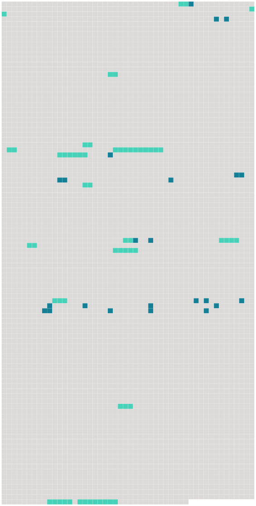

Longueur nb maillons : 39 mentions |
|
Quelquefois Samuel revenait pour lui donner la réplique, et alors la jeune femme jouissait de tout son cœur des répits que lui laissaient soit une santé déjà très compromise, soit l'arrivée successive [des enfants] [que] l'on mettait en nourrice dans les environs de Genève.
Nous donnerons ici quelques échantillons des lettres de Charlotte à son mari, et nous ne choisissons pas les plus piquantes ; aussi bien, ce n'est pas la vie de Charlotte, mais celle de Rosalie, que nous retraçons ; nous reproduisons de préférence celles où apparaissent [les enfants] , mêlés à la vie mondaine [6 phrases] Ta mère prétend que tu [les] aimes [tous] à la folie quoique tu trouves beau de paraître indifférent. [24 phrases] Je sens bien que je suis vieille, car je rentre avec délice et [mes petits] autour de moi : « Adieu, maman, adieu, maman, et le pa?? [33 phrases] M. de Constant se trouva jeune encore, veuf et chargé de [quatre enfans] [1 phrases]
Il s'occupa avec tendresse et activité de l'éducation de [ses enfans] sans négliger ses plaisirs ».
Après la mort de leur mère, la vie dut être triste pour [les quatre enfants placés entre une grand'mère et un père] qui ne s'aimaient guère, mais, heureusement, l'enfant ne s'aperçoit pas trop des dissentions intestines, même quand il en est l'objet. [Rosalie et ses frères et sœur] habitaient tantôt Genève avec [leur] père, tantôt St-Jean avec M. et Mme Pictet. [11 phrases]
Grand'maman Pictet avait défendu de monter à la grange ; [on] [s'] y trouvait pourtant un certain jour, jouissant peut-être d'autant plus qu' [on] [se] sentait sur un terrain défendu … [1 phrases]
… vite [on] dégringole le long de l'escalier qui ressemble à une échelle ; Rosalie passe la première pour essuyer l'orage, mais le bois est pourri, un échelon cède, un [des enfants] tombe sur celui qui précède ; dans son effort pour retenir l'avalanche, Rosalie se brise l'épaule … [17 phrases] [Des enfants] [qui] fréquentaient, [qui] coudoyaient le terrible homme!!
n'était -ce pas une société dangereuse pour [de petits aristocrates calvinistes] ? En effet, Mme Pictet emmenait parfois [ses petits-enfants] quand elle s'en allait à Ferney. [3 phrases]
Cet écrit de la main de Rosalie nous apprend comment, avec [ses frères et sa sœur] , elle jouait dans le jardin et même dans la chambre de travail du philosophe. [20 phrases] Il y faisait des parties de plaisir avec ses amis et sa société, et il y menait [ses quatre enfans] [1 phrases] Là il [nous] laissait [nous] livrer, il se livrait avec [nous] , à toute la gaîté, à toute l'insouciance de [notre] âge. Tout le jour, [nous] courions dans les vignes et sur les montagnes, le soir il [nous] faisait danser au son de sa mandoline. Je le vois encore [nous] plaçant aux quatre coins de la chambre, j'entends l'air au son duquel [nous] [nous] mettions en mouvement. Ces heureux momens de l'automne où [nous] étions réunis à nos frères et à [notre] Père étaient attendus et promis comme une récompense, et [nous] ne quittions jamais Lalex sans regrets. [42 phrases] Alors adieu les vœux, les convenances de fortune, passent [les quatre enfans] [32 phrases] Son mari et [les enfans de son mari] étaient [ses premiers objets d'intérêt et d'affection] , et la vivacité de ses sentimens suppléait aux défauts de son caractère. |
 |
Il est possible de télécharger la ressource sur la page Ortolang |
Si vous avez des questions ou vous voyez des erreurs, merci d'envoyer un mail à silvia.federzoni89@gmail.com |